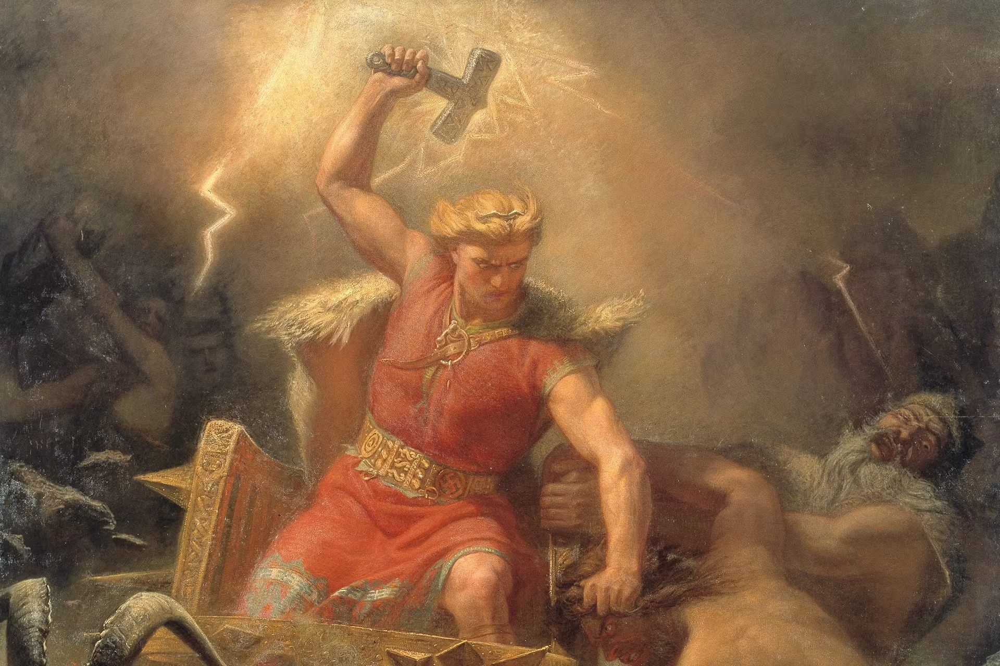

The Mighty Protector
Thor, a central figure in Norse mythology, is celebrated as the god of thunder, lightning, storms, and agricultural fertility. As the son of Odin, the Allfather, and the Earth goddess Fjörgyn, Thor is distinguished by his immense strength, courage, and loyalty. His most famous attribute is Mjölnir, a magical hammer that returns to him after being thrown and is a symbol of divine protection against the chaos of the cosmos.
Family and Allies
Thor is married to the goddess Sif, renowned for her golden hair, and has several children, including his sons Magni and Modi, and his daughter Thrud. He resides in Thrudvangar, where his hall Bilskirnir is located, holding the greatest number of rooms. Thor's chariot, drawn by the goats Tanngrisnir and Tanngnjóstr, is famous for its role in generating thunder and lightning across the skies.
Notable Myths and Adventures
- The Battle with Jörmungandr: Thor's destined final battle with the Midgard Serpent, Jörmungandr, is a highlight of his mythos, symbolizing the eternal struggle between order and chaos.
- The Theft of Mjölnir: The story of Mjölnir's theft by the giant Thrym, who demands Freyja as his bride in exchange, showcases Thor's cunning as he retrieves his hammer disguised as the goddess.
- The Fishing Expedition: Thor's fishing trip with the giant Hymir, where he attempts to pull Jörmungandr from the ocean, underscores his bravery and strength.
Legacy and Worship
Thor's worship was widespread across the Viking world, embodying the ideals of strength, protection, and perseverance. Thursday ("Thor's day") bears his legacy, reflecting his enduring influence in modern culture. Through Eddas and sagas, Thor's tales have been passed down, continuing to inspire with themes of heroism and the fight against evil.